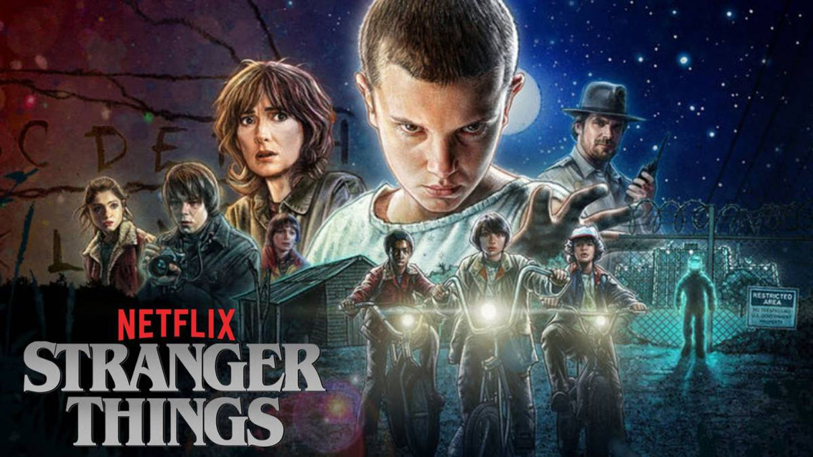
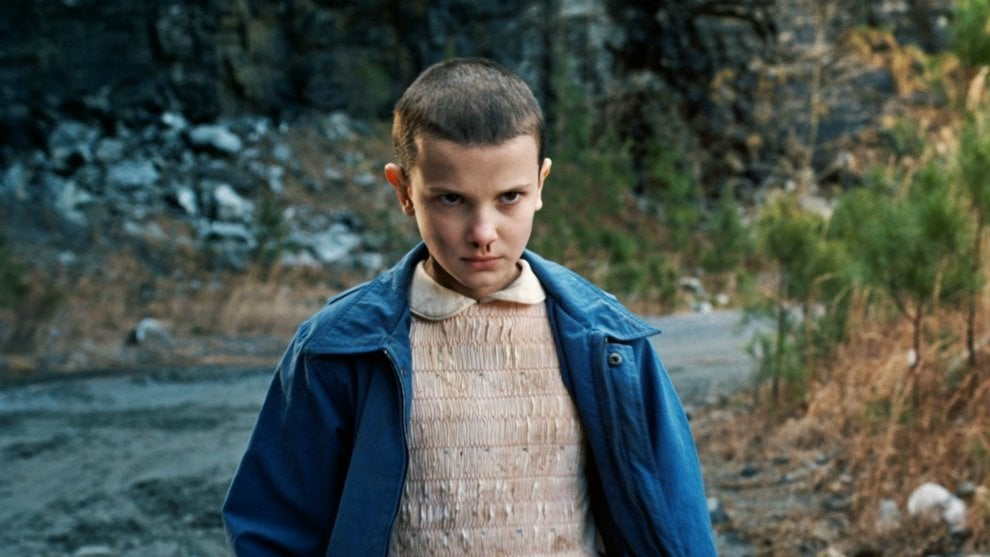
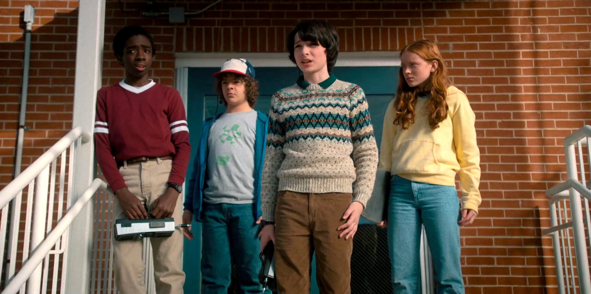
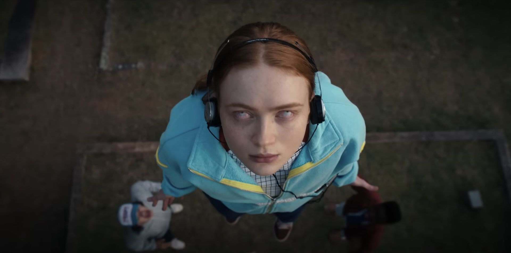
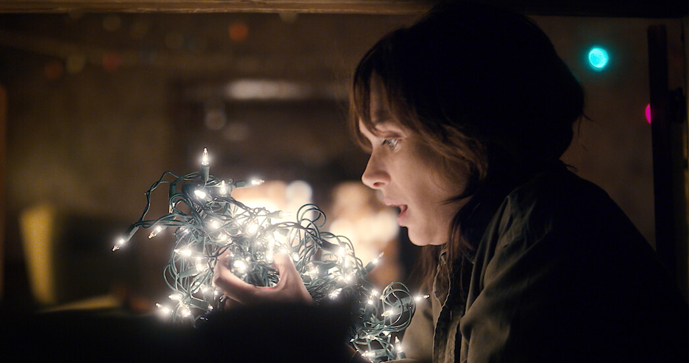
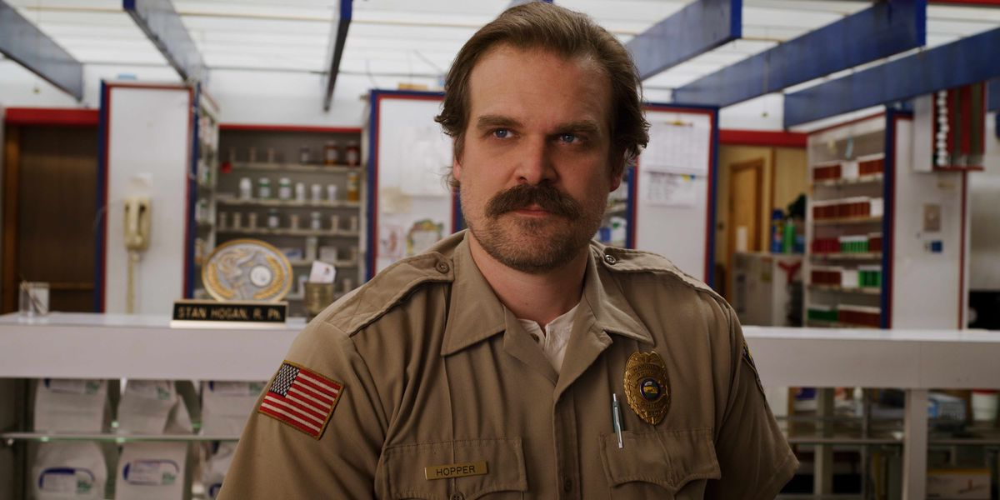
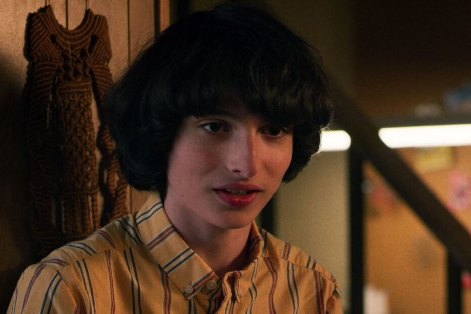
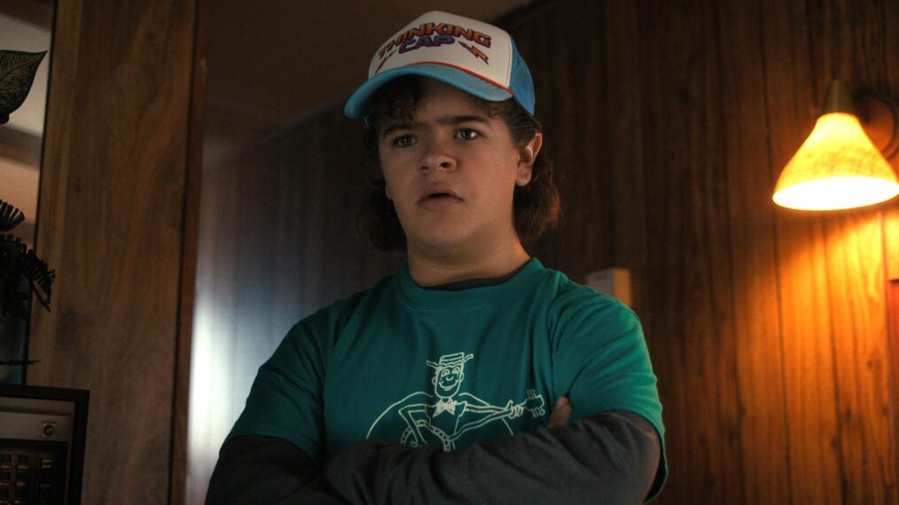
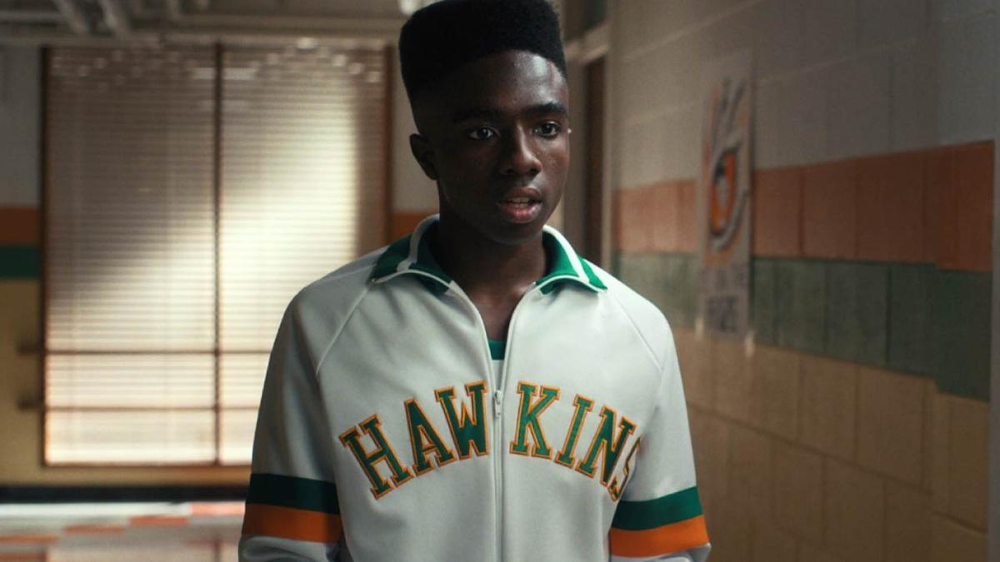
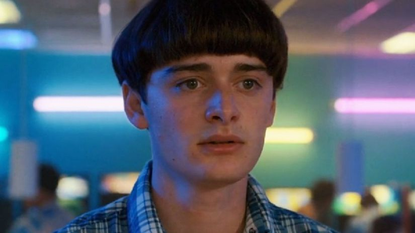

Sinopsis
Stranger Things es una serie de televisión web estadounidense de suspenso y ciencia ficción coproducida y distribuida por Netflix. Escrita y dirigida por los hermanos Matt y Ross Duffer, y producida ejecutivamente por Shawn Levy, se estrenó en la plataforma Netflix el 15 de julio de 2016. La historia se sitúa en el pueblo ficticio de Hawkins, en el estado Indiana, Estados Unidos, durante los años ochenta, cuando un niño de doce años llamado Will Byers desaparece misteriosamente. Poco después, Eleven (Once, en español), una niña aparentemente fugitiva y con poderes telequinéticos, se encuentra con Mike, Dustin y Lucas, amigos de Will, y los ayuda en la búsqueda del mismo.
Temporadas
Temporada 1
 La primera temporada comienza en noviembre de 1983, cuando Will Byers es secuestrado por una criatura del «otro lado» (demogorgon). Su madre, Joyce, y el jefe de policía del pueblo, Jim Hopper, buscan a Will. Al mismo tiempo, una joven psicoquinética llamada «Once» escapa del laboratorio y ayuda a los amigos de Will que son Mike, Dustin y Lucas, en sus propios esfuerzos por encontrar a Will.
Temporada 2
La segunda temporada se establece un año más tarde, comenzando en octubre de 1984. Will ha sido rescatado, pero pocos conocen los detalles de los eventos. Cuando se descubre que Will todavía está siendo influenciado por entidades del otro lado, sus amigos y familiares descubren que existe una amenaza mayor para su universo desde el Otro Lado.
Temporada 3

La tercera temporada se establece meses más tarde, comenzando en verano de 1985. En Hawkins, Indiana, el verano ya calienta. Se ha acabado el colegio, hay un nuevo centro comercial en el pueblo y el grupo de Hawkins está en la cúspide de su madurez. Florecen los romances complicando las dinámicas del grupo y van a tener que aprender a crecer sin separarse. Mientras tanto el peligro acecha. Cuando la ciudad se ve amenazada por enemigos viejos y nuevos, Once y sus amigos recuerdan que el mal nunca acaba; evoluciona. Ahora van a tener que formar equipo para sobrevivir y recordar que su amistad siempre será más fuerte que el miedo.
Temporada 4
La cuarta temporada ocurre seis meses después de La Batalla de Starcourt, que trajo terror y destrucción a Hawkins. Luchando con los sucesos posteriores, el grupo de amigos se separa por primera vez, y el navegar por las complejidades de la escuela secundaria no ha facilitado las cosas. Durante este momento vulnerable, surge una nueva y horrible amenaza sobrenatural, que presenta un espantoso misterio el cual, si se resuelve, finalmente podría poner fin a los horrores del Upside Down.
Personajes Principales
Eleven (Jane Hopper)
Joyce Byers
Jim Hopper
Mike Wheeler
Dustin Henderson
Lucas Sinclair
Will Byers
Reparto
- Winona Ryder como Joyce Byers, la madre de Will y Jonathan Byers y está divorciada de Lonnie Byers, el padre de sus dos hijos.
- David Harbour como Jim Hopper, el jefe del departamento de policía de Hawkins.
- Finn Wolfhard como Mike Wheeler, es hijo de Karen y Ted, hermano menor de Nancy y hermano mayor de Holly, y uno de los tres amigos de Will Byers.
- Millie Bobby Brown como Eleven (Jane Hopper), una joven con habilidades telepáticas y psicoquinéticas que creció en los laboratorios Hawkins.
- Gaten Matarazzo como Dustin Henderson, amigo de Mike, Will y Lucas, es un niño muy inteligente y estudioso cuya displasia cleidocraneal lo hace ceder.
- Caleb McLaughlin como Lucas Sinclair, es amigo de Mike, Will y Dustin, y hermano mayor de Erica.
- Natalia Dyer como Nancy Wheeler, es la hija de Karen y Ted, hermana mayor de Mike y Holly Wheeler, novia de Steve durante la primera temporada.
- Charlie Heaton como Jonathan Byers, un joven callado hermano de Will e hijo de Joyce.
- Noah Schnapp como Will Byers, hijo de Joyce y hermano de Jonathan, un niño callado y tímido.
- Sadie Sink como Maxine «Max» Mayfield, la hermanastra de Billy, una skater que llama la atención de Lucas y Dustin.
- Joe Keery como Steve Harrington, un estudiante popular en la escuela secundaria.